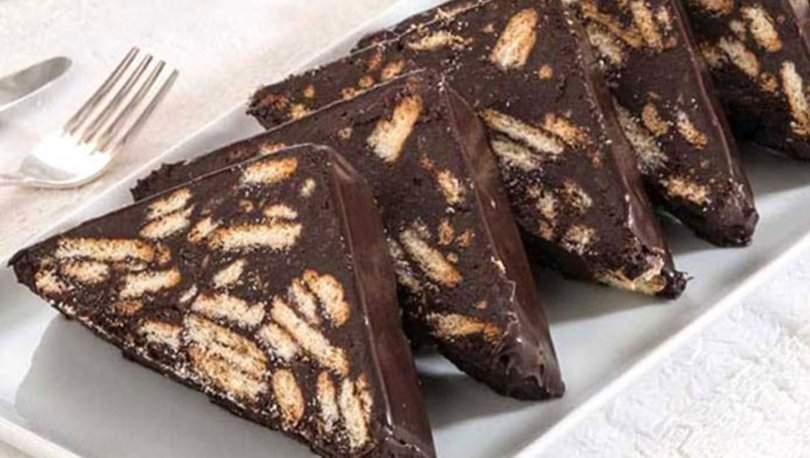

The most delicious and easiest cake made with petibör biscuits.
With its delicious appearance when cut into slices
I recommend you to try the cake recipe that appeals to the eyes.
If you still do not know the mosaic cake recipe and you have not tried it,
I highly recommend you try my recipe.
Afiyet Olsun. :)
INGREDIENTS
- 2 PK PETİBÖR BISCUIT
- 2 DINING SPOON BUTTER OR MARGARINE
- 1 WATER GLASS MILK
- 1 TEA GLASS SUGAR
- 3 TABLE COCOA
How to Make Mosaic Pasta Recipe?
- For the mosaic cake, we first break the biscuits, and when breaking, we are careful not to crumble them too much.
- Melt margarine and butter in a pan. Mix the melted butter, milk, sugar and cocoa well in a bowl.
- We pour the mixture we have obtained on the biscuits that we have broken, or vice versa.
- You can add the biscuits into this mixture. At this stage, optionally walnuts, hazelnuts or
You can also add pistachios.
Then mix the biscuits well, taking care not to crush them.
- We take the mixture between the stretch foil and give it a roll shape with our hands or
- If you have a long thin container, you can place it in it, it will be more properly shaped.
Let it rest for 2-3 hours in the freezer before serving.
- Then we serve it by slicing.
Video for detailed explanation;
Mosaic Pasta